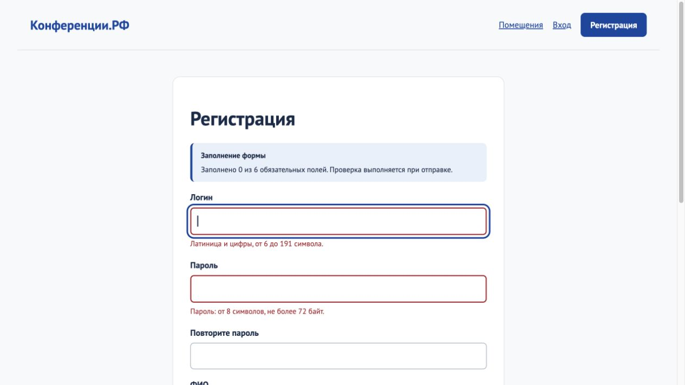
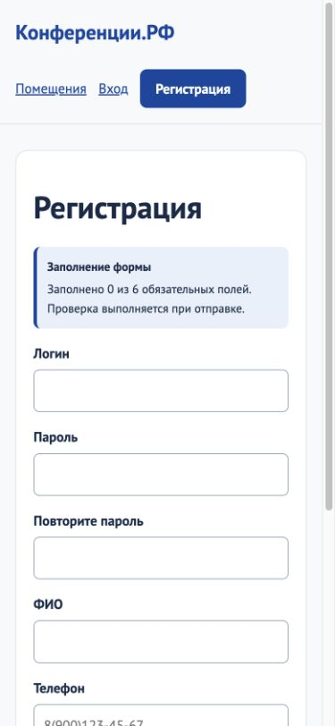
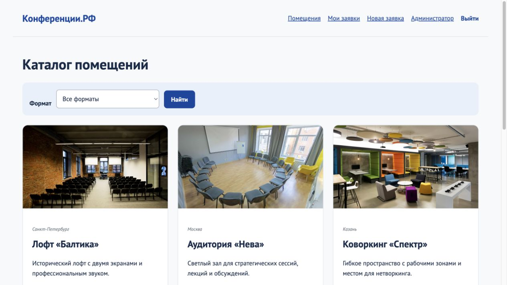
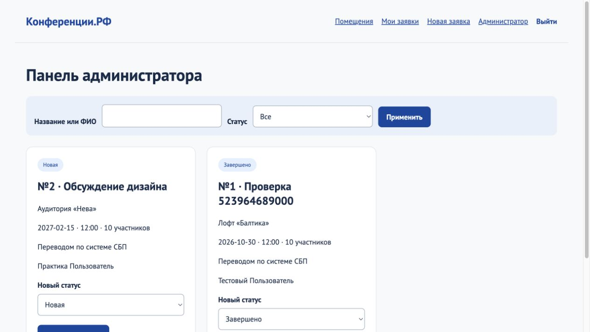

Конференции.РФ
Отдельная демонстрационная область по базовому КИМ 09.02.07-3-2027. Подробный разбор запуска и изменения дизайна в Flask либо PHP с MySQL/MariaDB; не входит в 30 индивидуальных областей.
Учебный маршрут / 2026-2027
7 семестр · Разработчик веб и мультимедийных приложений · Стек на выбор
Учебный комплектОтдельная демонстрационная область по базовому КИМ 09.02.07-3-2027. Подробный разбор запуска и изменения дизайна в Flask либо PHP с MySQL/MariaDB; не входит в 30 индивидуальных областей.
Скачать исходный проект «Конференции.РФ»: Flask + MySQL (ZIP)
Распакуйте и откройте в редакторе; начните с этой ветки, затем выполните изменения по методичке.
Скачать исходный проект «Конференции.РФ»: PHP + MySQL (ZIP)
Распакуйте и откройте в редакторе; начните с этой ветки, затем выполните изменения по методичке.
На «Конференции.РФ» разберём интерфейс с работающими данными. Каталог — набор площадок; заявка — запись пользователя со статусом. Frontend показывает данные, backend проверяет правила, БД сохраняет результат. В исходной основе эти функции уже реализованы. Вы самостоятельно добавите слой дизайна и доступности, затем перенесёте решения в свою область.
Выберите один серверный стек и пройдите его запуск. Общие главы CSS/JavaScript обязательны для обеих веток. Файлы source — начало; demo — итог для сверки после выполнения. Архив содержит папки projects/source/flask либо projects/source/php; после распаковки откройте именно папку с app.py или index.php, а не верхнюю папку ZIP.
Распакуйте выбранный исходный ZIP в отдельную папку. В Visual Studio Code откройте File → Open Folder… / Файл → Открыть папку…, выберите папку с app.py (Flask) или index.php (PHP), нажмите Open / Открыть. В Explorer / Проводник слева должны быть видны static и серверные файлы. Не открывайте архив как проект.
Откройте Terminal → New Terminal / Терминал → Создать терминал. Для Python выполните py --version в Windows или python3 --version в macOS. Для PHP в стандартном Windows XAMPP выполните & C:\xampp\php\php.exe -v . Нужны Python 3.10+ для Flask, PHP 8.2+ для PHP и MySQL/MariaDB. Запишите фактические версии. Если программа отсутствует, согласуйте подготовку среды с преподавателем; не изменяйте чужие базы.
Flask: app.py содержит маршруты, templates — Jinja, static/css/style.css — исходный дизайн, mysql_backend.py — адаптер БД, schema-mysql.sql — схема. PHP: index.php содержит маршруты и разметку, lib.php — PDO и вспомогательные функции, setup.php — первичное заполнение, static/style.css — дизайн. rooms.json — демонстрационный каталог в обеих ветках. Изучите, где заканчивается серверная проверка и начинается HTML.
В XAMPP Control Panel нажмите Start у MySQL и Apache. Откройте http://localhost/phpmyadmin . Выберите «Базы данных» / Databases. В «Создать базу данных» введите pm08_flask_2027 или pm08_php_2027, выберите utf8mb4_unicode_ci, нажмите «Создать». Нужна новая пустая база. Не импортируйте таблицы заранее: их создаёт выбранная ветка. Не выбирайте одно имя для двух проектов.
Flask и PHP используют разные форматы хеша пароля. Даже при одинаковых таблицах нельзя смешивать пользователей. Для каждого индивидуального варианта создавайте отдельную базу pm08_vNN_flask или pm08_vNN_php. Настройки доступа зависят от вашей среды; root без пароля ниже — стандарт локального XAMPP, а не универсальные реквизиты.
users содержит логин, пароль, ФИО, телефон и e-mail из регистрации. rooms хранит учебный каталог площадок. applications связывает пользователя с помещением и содержит название, дату, время, число участников, оплату и статус. reviews связан с завершённой заявкой; rate_limits — технический ограничитель попыток. Название мероприятия, число участников, города и цены — уточнения примера. В этой копии created_at/updated_at имеют тип DATETIME, event_date — VARCHAR(10): это исправление совместимости исходной схемы, не изменение правил пользователя.
В терминале VS Code из папки с app.py выполните в Windows:
py -m venv .venv
.\.venv\Scripts\python.exe -m pip install -r requirements.txt
Это создаёт изолированное окружение проекта и устанавливает Flask, PyMySQL и средства проверки. В macOS эквивалент: python3 -m venv .venv, затем .venv/bin/python -m pip install -r requirements.txt . Не копируйте готовое окружение другого компьютера.
В PowerShell введите:
$env:DB_BACKEND="mysql"
$env:MYSQL_HOST="127.0.0.1"
$env:MYSQL_PORT="3306"
$env:MYSQL_DATABASE="pm08_flask_2027"
$env:MYSQL_USER="root"
$env:MYSQL_PASSWORD=""
.\.venv\Scripts\python.exe -m flask --app app run --port 5017
В macOS: DB_BACKEND=mysql MYSQL_HOST=127.0.0.1 MYSQL_PORT=3306 MYSQL_DATABASE=pm08_flask_2027 MYSQL_USER=root MYSQL_PASSWORD="" .venv/bin/python -m flask --app app run --port 5017 . Подставьте фактический порт и свою учётную запись. Откройте http://127.0.0.1:5017 . Пустая база заполнится автоматически. Терминал оставьте работающим.
Откройте «Помещения»: должны отображаться шесть площадок. В phpMyAdmin обновите список таблиц: users, rooms, applications, reviews, rate_limits. Если вместо страницы traceback, прочитайте последнюю строку: Unknown database — ошибочное имя БД; Connection refused — сервер/порт; ModuleNotFoundError — запуск не из .venv. Не используйте init-db для обычного запуска: он пересоздаёт данные.
Распакуйте PHP-ветку так, чтобы index.php находился в C:\xampp\htdocs\pm08-conference . В XAMPP Control Panel нажмите Start у Apache и MySQL. Создайте новую пустую pm08_php_2027 по предыдущей главе. Откройте эту папку через File → Open Folder… в VS Code.
В PowerShell из папки проекта выполните:
$env:MYSQL_HOST="127.0.0.1"
$env:MYSQL_PORT="3306"
$env:MYSQL_DATABASE="pm08_php_2027"
$env:MYSQL_USER="root"
$env:MYSQL_PASSWORD=""
& C:\xampp\php\php.exe setup.php
Вы увидите сообщение о таблицах, помещениях и администраторе. setup.php выполняется только в CLI и отказывается менять непустую БД.
В том же терминале выполните & C:\xampp\php\php.exe -S 127.0.0.1:8087 . Откройте http://127.0.0.1:8087/index.php . Так сервер получает заданное имя pm08_php_2027. Если открывать через Apache по http://localhost/pm08-conference/, параметры БД должны быть настроены именно в окружении Apache: переменные PowerShell туда не передаются. Для данной методички используйте встроенный сервер, а Apache — для phpMyAdmin. В macOS используйте фактический путь установленного php, например /Applications/XAMPP/xamppfiles/bin/php .
Откройте регистрацию. Для демонстрации введите pm08student, Practice2027, Практика Пользователь, 8(900)123-45-67, student@example.test; подтвердите пароль. Это вымышленные учебные данные. После создания войдите, выберите площадку, укажите название «Обсуждение дизайна», будущую дату, время 12:00, 10 участников и СБП. Отправьте заявку. В личном кабинете она имеет статус «Новая».
Выйдите пользователем. Войдите Conf2027 / Demo77. Откройте административную панель, найдите заявку, смените статус на «Мероприятие назначено», сохраните; затем «Завершено». Выйдите и войдите пользователем. Только теперь доступен отзыв. Введите содержательный текст и отправьте. Проверяйте состояние после каждого действия, а не только красивую главную страницу.
Оплата — выбранный способ, а не платёжный шлюз. Пересечение интервалов бронирования не рассчитывается. Имена и адреса помещений учебные. Дизайн не должен обещать функции, которых нет. Исходный код не меняйте до фиксации работающего исходного сценария.
Составьте схему: главная → каталог → вход/регистрация → заявка → личный кабинет; администратор → фильтры → карточка → смена статуса. Под каждым экраном запишите вопрос пользователя и главное действие. Например каталог отвечает «какая площадка мне подходит», форма — «какие данные нужны для заявки». Навигация должна помогать этому пути.
Сделайте простой эскиз каждой страницы на бумаге либо HTML-каркасом. На каталоге сначала заголовок и фильтр, затем число результатов и карточки. На форме сначала назначение и подсказка, затем метки/поля, затем отправка. На мобильном экране сохраняйте этот порядок. Не выбирайте картинки раньше структуры.
Определите текст, акцент, ошибку, фон, интервалы и размеры. Объясните, почему главное действие заметнее вторичного. Для демонстрации сохраняем PT Sans и синюю гамму исходного руководства; тёмный синий #0d47a1 используется для контрастных кнопок. Конкретные дополнительные проверки доступности — учебные критерии этой практики.
В Explorer раскройте static → img и static → fonts. Откройте изображение щелчком: VS Code покажет предпросмотр. Сопоставьте имя с rooms.json. Flask хранит image как img/имя-файла; PHP использует basename этого значения и папку static/img. Не меняйте путь в одной ветке, не проверив другую.
В браузере откройте инструменты разработчика: F12 в Windows; в macOS Command+Option+I. На вкладке Network / Сеть включите фильтр Img и обновите страницу. Каждое видимое изображение должно загружаться без 404. В Font убедитесь в загрузке локального PT Sans. Нижним карточкам нужен loading="lazy"; главному изображению lazy не добавляйте, чтобы не задерживать первое содержимое.
Для своей области выберите законно доступное изображение, откройте в установленном графическом редакторе, обрежьте под содержание карточки и экспортируйте копию в WebP/JPEG. Сохраните оригинал отдельно. Сравните исходный и конечный размер файла и визуальное качество. Для карточки достаточно копии близкой к её экранному размеру; не растягивайте маленькое изображение. Укажите содержательный alt, а декоративному изображению — пустой alt. В демонстрации уже подготовлены локальные оптимизированные ресурсы.
В Explorer нажмите правой кнопкой на static → New File / Новый файл; введите design.css и Enter. Это ваш учебный файл, не автоматически созданный код. Сохраните Ctrl+S (macOS Command+S). Исходный style.css сохраняется: design.css подключается после него и уточняет отдельные правила.
Откройте templates/base.html. Перед закрывающим </head>, после исходной таблицы стилей, добавьте:
<link rel="stylesheet" href="{{ url_for('static', filename='design.css') }}">
Jinja url_for строит адрес ресурса через Flask; не вставляйте путь диска.
Откройте index.php. Найдите <link rel="stylesheet" href="static/style.css"> в HTML-части. Сразу после него и до </head> добавьте:
<link rel="stylesheet" href="static/design.css">
PHP не использует Jinja. Не копируйте фигурные скобки из Flask в PHP. Обновите браузер, проверьте Network: design.css должен иметь успешный ответ.
Запишите начальный блок в пустой static/design.css. Переменная --design-accent задаёт общий акцент; изменение значения меняет все использующие её правила. Само объявление переменных ещё не меняет элементы. На вкладке Elements выберите body, откройте Computed / Вычисленные стили и найдите --design-accent.
/* Дизайн ПМ.08: добавляйте блоки в указанном порядке. */
:root {
--design-accent: #0d47a1;
--design-text: #162b48;
--design-error: #a81727;
--design-space: 8px;
}
Сохраните файл, обновите страницу выбранной ветки. Проверьте результат на уже работающем сервере. Если правило не действует, в Network проверьте подключение design.css, затем порядок таблиц стилей и совпадение класса. Не исправляйте это копированием всех стилей в HTML.
Добавьте блок после закрывающей скобки :root. Селектор задаёт контрастный фон основной кнопки; :focus-visible показывает место клавиатурного фокуса. min-height не масштабирует текст, а увеличивает область нажатия. Обновите страницу и пройдите кнопки Tab: фокус виден, Enter активирует ссылку/отправку. Кнопка показа пароля остаётся вторичной.
/* Основное действие отличается от текста и имеет контрастную подпись. */
.button-primary, .nav-primary, .button, button[type="submit"], form > button {
background-color: var(--design-accent);
color: #fff;
min-height: 44px;
}
a, button, input, select, textarea { touch-action: manipulation; }
:focus-visible {
outline: 3px solid var(--design-accent);
outline-offset: 4px;
}
Сохраните файл, обновите страницу выбранной ветки. Проверьте результат на уже работающем сервере. Если правило не действует, в Network проверьте подключение design.css, затем порядок таблиц стилей и совпадение класса. Не исправляйте это копированием всех стилей в HTML.
Продолжите файл следующими правилами. design-summary появится после подключения JavaScript; до этого проверяйте стили существующих полей и ошибок. aria-invalid — смысловой признак ошибки, не просто класс цвета. Отправьте пустую регистрацию: текст ошибки остаётся читаемым, поля не меняют имена.
/* Формы: подсказка и ошибка сопровождают поле, а не только цвет. */
.design-summary {
margin: 0 0 16px;
padding: 12px 16px;
border-left: 4px solid var(--design-accent);
border-radius: 8px;
background: #e9f0fa;
color: var(--design-text);
font-size: 14px;
}
.design-summary strong { display: block; margin-bottom: 4px; }
[aria-invalid="true"] { border: 2px solid var(--design-error); }
.error, .field-error { color: var(--design-error); }
.rating-options input { width: 1px; height: 1px; clip-path: inset(50%); }
.rating-options input:focus-visible + label { outline: 3px solid var(--design-accent); }
input, select, textarea { min-height: 44px; }
Сохраните файл, обновите страницу выбранной ветки. Проверьте результат на уже работающем сервере. Если правило не действует, в Network проверьте подключение design.css, затем порядок таблиц стилей и совпадение класса. Не исправляйте это копированием всех стилей в HTML.
Добавьте блок карточек. minmax из исходной сетки и перенос текста удерживают длинное имя в своей колонке; aspect-ratio задаёт стабильное место изображения. object-fit: cover может обрезать края, поэтому проверьте, что важный объект виден. В своей карточке временно задайте длинное название и проверьте широкий/узкий экран.
/* Карточки сохраняют форму при длинных названиях. */
.card h2, .room-card h3, .application-card h3 {
overflow-wrap: anywhere;
}
.card > img, .room-card-image img {
object-fit: cover;
aspect-ratio: 16 / 10;
}
.grid, .room-grid { align-items: stretch; }
Сохраните файл, обновите страницу выбранной ветки. Проверьте результат на уже работающем сервере. Если правило не действует, в Network проверьте подключение design.css, затем порядок таблиц стилей и совпадение класса. Не исправляйте это копированием всех стилей в HTML.
Добавьте media query после карточек. Правила действуют только при ширине до 600 px. Мы перестраиваем сетку, а не скрываем переполнение. В DevTools включите Device toolbar / Панель устройств, выберите Responsive и введите 390 и 844. Проверьте форму, каталог и администратора. Возвратите широкий экран: исходная многоколоночная сетка должна сохраниться.
/* Узкий экран: ничего не скрываем ради устранения переполнения. */
@media (max-width: 600px) {
.form-card, .auth-card { padding: 20px; }
.grid, .room-grid { grid-template-columns: minmax(0, 1fr); }
.design-summary { padding: 12px; }
.filter input, .filter select { max-width: 100%; }
h1 { overflow-wrap: anywhere; }
}
Сохраните файл, обновите страницу выбранной ветки. Проверьте результат на уже работающем сервере. Если правило не действует, в Network проверьте подключение design.css, затем порядок таблиц стилей и совпадение класса. Не исправляйте это копированием всех стилей в HTML.
Завершите CSS этим блоком. Короткое появление подсказки показывает обратную связь. prefers-reduced-motion отключает эффекты для системного предпочтения уменьшения движения. В DevTools → More tools → Rendering включите Emulate CSS media feature prefers-reduced-motion: reduce и обновите. Функции и подсказка продолжают работать без движения.
/* Анимация обратной связи не мешает читать и вводить данные. */
.design-summary { animation: design-appear .18s ease-out; }
@keyframes design-appear {
from { opacity: 0; transform: translateY(4px); }
to { opacity: 1; transform: translateY(0); }
}
@media (prefers-reduced-motion: reduce) {
*, *::before, *::after {
animation: none !important;
transition: none !important;
scroll-behavior: auto !important;
}
}Сохраните файл, обновите страницу выбранной ветки. Проверьте результат на уже работающем сервере. Если правило не действует, в Network проверьте подключение design.css, затем порядок таблиц стилей и совпадение класса. Не исправляйте это копированием всех стилей в HTML.
Откройте templates/register.html. Найдите <label for="username"> и <input id="username" name="username">. for связывает метку с id, name отправляется серверу; эти роли различаются. aria-describedby перечисляет username-hint и при ошибке username-error. После ошибочной отправки сервер возвращает values и errors. Сохраняются безопасные текстовые поля, а пароль заново вводит пользователь.
Откройте lib.php, найдите function field. Он печатает label, input и при наличии ошибки p.error. В index.php формы вызывают field с теми же именами, что проверяет сервер. JS далее добавит id ошибки и aria-describedby без изменения name. select комнаты и оплаты остаётся нативным. Не заменяйте select обычным div ради внешнего вида: потеряете клавиатуру и отправляемое значение.
Отправьте короткий логин, неверный телефон и несовпадающие пароли. Причина отказа — проверка на сервере. CSS только показывает её. Подсказка заполнения дальше считает непустые поля, а не гарантирует их корректность. Даже при отключённом JavaScript сервер должен отвергать неправильные данные.
В Explorer нажмите правой кнопкой на static → New File, введите design.js. Код ниже вводится двумя законченными частями. Файл выполняется после разбора HTML благодаря defer; серверные проверки не заменяются.
В templates/base.html перед </body>, после исходного app.js, добавьте:
<script src="{{ url_for('static', filename='design.js') }}" defer></script>
Сохраните файл. При обновлении Network должен показывать design.js; в Console пока нет ошибок.
Перед </head> после исходного static/app.js добавьте:
<script src="static/design.js" defer></script>
В этой ветке исходный скрипт уже подключается в head с defer. Не вставляйте тег внутрь блока <?php ... ?>. Проверьте вкладку Console.
В пустой static/design.js напишите первый блок. querySelector выбирает основную форму в обеих ветках; querySelectorAll собирает поля, filter исключает скрытый CSRF. createElement создаёт собственную подсказку. prepend ставит её перед полями. Значения не отправляются и не сохраняются: читается только факт заполнения.
// ПМ.08: подсказка сопровождает основную форму, сервер проверяет данные.
'use strict';
const designForm = document.querySelector('.stack-form, .form-card form');
if (designForm) {
const allFields = [...designForm.querySelectorAll('input, select, textarea')];
const fields = allFields.filter((field, index) => field.type !== 'hidden' && field.required
&& (field.type !== 'radio' || allFields.findIndex(other => other.name === field.name) === index));
const summary = document.createElement('p');
summary.className = 'design-summary';
summary.setAttribute('role', 'status');
const heading = document.createElement('strong');
heading.textContent = 'Заполнение формы';
const counter = document.createElement('span');
summary.append(heading, counter);
designForm.prepend(summary);
function updateSummary() {
const filled = fields.filter(field => field.type === 'radio'
? allFields.some(other => other.name === field.name && other.checked)
: field.value.trim() !== '').length;
counter.textContent = `Заполнено ${filled} из ${fields.length} обязательных полей. Проверка выполняется при отправке.`;
}
designForm.addEventListener('input', updateSummary);
designForm.addEventListener('change', updateSummary);
updateSummary();
}
input обновляет счётчик после ввода, change — после выбора. updateSummary сразу выводит начальное состояние. Откройте регистрацию: 0 из 6; заполните одно поле — 1 из 6; очистите — снова 0. Счётчик не означает успешную валидацию. Откройте каталог без формы регистрации: условие if предотвращает ошибку. Отправьте корректную форму — создание профиля должно работать как раньше.
Добавьте следующий блок в конец static/design.js после if. Он ищет уже видимые ошибки сервера, находит связанное поле, добавляет aria-invalid и связывает текст через aria-describedby. Set исключает повторение идентификаторов. Первое ошибочное поле получает фокус, поэтому пользователь сразу понимает, что исправлять.
// Связываем видимые серверные ошибки с соответствующими полями.
const errors = document.querySelectorAll('.field-error, .error');
let firstInvalid = null;
errors.forEach((error, index) => {
if (!error.id) error.id = `design-error-${index}`;
const group = error.closest('.field');
const input = group ? group.querySelector('input, select, textarea')
: error.previousElementSibling;
if (!input || !input.matches('input, select, textarea')) return;
input.setAttribute('aria-invalid', 'true');
const ids = new Set((input.getAttribute('aria-describedby') || '').split(/\s+/).filter(Boolean));
ids.add(error.id);
input.setAttribute('aria-describedby', [...ids].join(' '));
firstInvalid ||= input;
});
if (firstInvalid) firstInvalid.focus();Отправьте пустую регистрацию. Курсор должен оказаться в логине, в Elements у поля видны aria-invalid="true" и идентификатор текста ошибки. Исправьте все поля и отправьте снова: форма проходит серверную проверку. В PHP ошибка соседствует с input, во Flask находится внутри .field — поэтому код явно учитывает оба устройства разметки.


В браузере откройте F12 → Toggle device toolbar / Переключить панель устройства (Ctrl+Shift+M). Выберите Responsive, введите ширину 390, высоту 844 и масштаб 100%. Проверьте главную, каталог, регистрацию, вход, заявку, кабинет и администратора. Во Flask мобильное меню открывается кнопкой; в PHP ссылки переносятся.
Если страница шире экрана, в Elements найдите элемент: фиксированная ширина, длинная строка, min-width или несжимаемый flex. Исправьте конкретный элемент. overflow-x:hidden на body скрывает проблему и часть интерфейса. При увеличении текста интерфейс должен оставаться доступным. Форма может быть длиннее экрана вертикально — это допустимо.


Откройте «Помещения», выберите тип, город, минимальную вместимость, нажмите «Показать». Выбранные значения сохраняются, число найденных площадок соответствует карточкам. Введите вместимость 1000: возникает отдельное пустое состояние с предложением сбросить фильтры. Поля не заменяются декоративными элементами. Изменения дизайна делайте в общей сетке и карточках.
Откройте index.php?r=rooms, выберите «Кинозал», нажмите «Найти». hidden r сохраняет маршрут, category — значение фильтра. Сравните карточки до/после. PHP-основа имеет фильтр типа, но не города/вместимости: не описывайте их как уже готовые функции. Индивидуальные задания ниже используют общий фильтр типа и общий сценарий, чтобы обе ветки были выполнимы.


У заявки три статуса: «Новая», «Мероприятие назначено», «Завершено». Подпись обязательна даже при цветовом различии. В личном кабинете отзыв заблокирован до завершения. Пройдите сценарий обеими ролями и проверьте, что карточка показывает название площадки, дату, оплату и статус.
Войдите Conf2027 / Demo77. Фильтр статуса сокращает список, поиск находит название мероприятия/ФИО. Выберите статус и сохраните. Проверяйте соответствующую заявку, а не случайную первую карточку. После перезагрузки статус сохраняется. В адаптивной версии поля и кнопки остаются видимыми.


В карточке варианта скачайте rooms-NN.json и переименуйте копию в rooms.json выбранного проекта. Файл содержит три учебные площадки вашей области. Поменяйте бренд и тексты в base.html/index.html, метки category в app.py или HTML списка PHP, не меняя внутренние значения auditorium/coworking/cinema. Для данного задания это технические ключи трёх типов ресурсов. Отдельный новый словарь имён допустим, если вы меняете все связанные места согласованно.
Создайте новую пустую базу pm08_vNN_flask либо pm08_vNN_php. Задайте MYSQL_DATABASE в терминале, завершите старый сервер Ctrl+C. Для Flask запустите сервер снова: он заполнит пустую БД новым rooms.json. Для PHP выполните setup.php, затем php -S. Замена rooms.json сама по себе не обновляет существующую БД. Не удаляйте базы ради обновления каталога. Если продолжаете старые данные, изменяйте только нужные записи явными запросами и проверяйте FK.
В файлах вариантов использованы локальные изображения общей основы как технические иллюстрации площадок. Подберите более подходящие своей области и обновите image, затем проверьте Network и alt. JSON нельзя редактировать с комментариями или завершающей запятой. Поля id учебные; инициализация БД создаёт свои ключи, поэтому не привязывайте логические правила к порядковому номеру изображения.
Откройте templates/_room_card.html. Найдите <div class="room-card-body">. После абзаца {{ room['description'] }} и до блока характеристик добавьте:
<p class="room-equipment"><strong>Оснащение:</strong> {{ room['equipment'] }}</p>
Это значение читается из каталога и проходит стандартное HTML-экранирование Jinja. Не используйте |safe для данных. Обновите каталог и сравните оснащение с rooms.json.
Откройте index.php. Найдите цикл foreach($rooms as $room) и абзац <?=e($room['description'])?>. Непосредственно после него добавьте:
<p class="room-equipment"><strong>Оснащение:</strong> <?=e($room['equipment'])?></p>
Функция e экранирует текст. Вставляйте строку в HTML-часть карточки, сохраняя границы PHP. После обновления карточки показывают соответствующее оборудование.
В конец static/design.css своего варианта добавьте:
.room-equipment { padding-top: 8px; border-top: 1px solid #dce3eb; }
Сохраните и проверьте каталог 390 px и широкий экран. Это пример дополнительного изменения; исходная демонстрация подсказки и ошибок воспроизводится предыдущими главами. Выполняйте данную вставку, когда она нужна вашей области.
Flask: в app.py найдите ROOM_TYPE_LABELS и замените только значения строк для auditorium, coworking, cinema названиями трёх типов своей области. PHP: в index.php найдите массив [''=>'Все форматы','auditorium'=>'Аудитория','coworking'=>'Коворкинг','cinema'=>'Кинозал'] и замените подписи, сохранив ключи. Не меняйте schema CHECK отдельно от приложения. Перезапустите Flask после правки app.py; PHP читает файл при запросе.
В templates/rooms.html найдите {% else %} после {% if rooms %}, затем div.empty-state. Перепишите h2 и p под свою область, сохраните ссылку url_for('portal.rooms'). Содержательный текст сообщает: что не найдено, как изменить условия и как сбросить фильтр. Проверьте вместимость 1000 и возвращение полного каталога.
В index.php после вычисления $rooms и перед <div class="grid"> добавьте:
<?php if(!$rooms): ?>
<section class="notice" role="status"><h2>Площадки не найдены</h2>
<p>Измените формат или вернитесь к полному каталогу.</p>
<a href="<?=url('rooms')?>">Показать все площадки</a></section>
<?php endif ?>
Для проверки на копии каталога временно оставьте два типа в JSON и используйте новую пустую БД; выберите отсутствующий третий тип. Затем восстановите свой каталог в отдельной рабочей БД. Не очищайте существующие пользовательские данные.
Flask: templates/application_form.html, абзац под названием формы и small возле room_id. PHP: index.php, ветка elseif($route==='new'), абзац после h1. Подпишите, что заявка сначала рассматривается; поясните название события и число участников. Не заменяйте name и value. Проверьте, что текст действительно относится к своей предметной области.
Flask: templates/dashboard.html содержит .status-badge и .application-content; templates/admin.html — .admin-application-card и .status-form. PHP: index.php, ветка dashboard/admin, span.badge и form action url('status'). Меняйте расположение в CSS, сохраняя текст $statusLabels и hidden id. Цвет не заменяет название. Для длинного названия используйте overflow-wrap:anywhere; для сетки — minmax(0,1fr). Не назначайте фиксированную ширину карточке.
Отдельно проверьте длинное событие, узкий экран, все три статуса и сохранение. Поле статуса отправляет техническое new/scheduled/completed, а не русский текст. Примените дополнительное решение только там, где оно помогает пользователю вашей области.
Из папки с app.py запустите в PowerShell:
$env:PORTAL_TEST_MYSQL="1"
$env:MYSQL_PORT="3306"
.\.venv\Scripts\python.exe -m pytest -q
Проверки создают отдельные случайные базы rvpm_test_ и удаляют только их. Нужна учётная запись с правом CREATE/DROP DATABASE. Укажите реальный порт. Не используйте основную БД для экспериментов. Ожидается 8 passed. Этот тест подтверждает серверные сценарии; визуальную проверку выполняйте отдельно.
Если Python установлен для проверки, из папки с index.php в PowerShell задайте $env:PHP_BASE="http://127.0.0.1:8087/index.php", затем py tests/php-smoke.py . Он создаёт вымышленных пользователей и заявки в выбранной учебной БД. Ожидается PHP HTTP smoke passed. Для запуска PHP-приложения Python не нужен: при его отсутствии пройдите описанную ручную матрицу в браузере.
Успешные тесты не подтверждают качество дизайна. Ошибка соединения требует проверки порта и сервера; ошибка assertions показывает нарушенный сценарий. Не удаляйте проверку ради зелёного результата. После изменения шаблона повторите связанные сценарии и просмотр интерфейса.
Скачать демонстрационный проект «Конференции.РФ»: Flask + MySQL (ZIP)
Откройте после собственной реализации для сверки CSS, JavaScript и подключения файлов. Это пример другой области.
Скачать демонстрационный проект «Конференции.РФ»: PHP + MySQL (ZIP)
Откройте после собственной реализации для сверки CSS, JavaScript и подключения файлов. Это пример другой области.
Серверные поля и отношения БД сохраняют общий сценарий. Меняются бренд, терминология ресурса/события, каталог, палитра и акценты. Выполните два дополнительных задания своей карточки. Не добавляйте новую архитектуру или библиотеку без необходимости: задача ПМ.08 — показать понятное действие и состояние на существующей основе.
До изменения сформулируйте наблюдаемую проблему и ожидаемый результат. Измените конкретный шаблон/правило CSS/текст. Повторите проблемный сценарий и основной путь заявки. Например усиление пустого состояния не должно скрывать фильтр; увеличение карточки не должно ломать 390 px; изменение статуса не должно менять отправляемое value.
Откройте итоговый ZIP своей ветки после собственной реализации. Сравните static/design.css, static/design.js и их подключения. Вся серверная основа приложена для проверки структуры. Не переносите демонстрационный каталог обратно в свой вариант. Сверяйте смысл каждого фрагмента с выполненными действиями.
Network: 404 — неверный путь или файл создан в другой папке; 200, но старый вид — выполните Ctrl+F5 и проверьте порядок stylesheet; правило зачёркнуто в Styles — его переопределил более поздний/точный селектор. Console: Unexpected token — синтаксис JS; Cannot read properties of null — код предполагает элемент, которого нет. Не убирайте проверку if для страницы без основной формы.
Проверьте name, action, method, hidden CSRF. label for связан с id, но сервер читает name. Кнопка показа пароля должна иметь type="button", иначе она отправит форму. Ошибка 400 после открытой давно формы: обновите её и получите актуальный CSRF. При ошибке 403 проверьте роль/владельца, а не отключайте проверку.
rooms.json читается при первичной инициализации. Убедитесь в новой пустой базе и точном MYSQL_DATABASE. В PHP параметры Apache и CLI различаются, поэтому следуйте запуску встроенным сервером. При ошибке setup.php «База не пуста» не обходите защиту; выберите новый учебный проект. SQL ошибок дат/индекса в предоставленной новой копии не ожидается: схемы исправлены и проверены.
Проверьте успешную регистрацию и дубликат логина; неверный вход; каталог и фильтр; заявку на будущую дату; превышение вместимости; доступ обычного пользователя к admin; чужую заявку; переход всех статусов; отзыв до/после завершения; повторный отзыв. Запишите фактическое ожидаемое и полученное поведение. Используйте только вымышленные тестовые данные.
На 390×844 и широком экране убедитесь: заголовки читаемы, поля имеют метки, ошибки связаны с полями, фокус виден, цвета имеют достаточный контраст, изображения не искажены, длинные строки переносятся. Просмотрите каждую страницу, а не только главную. Объясните, какое решение улучшает конкретный сценарий и каким наблюдением это доказано.
В VS Code откройте Source Control / Управление исходным кодом. Если проект новый, нажмите Initialize Repository / Инициализировать репозиторий. Проверяйте список изменений; добавляйте только исходники и учебные ресурсы. В .gitignore укажите .venv/, instance/, __pycache__/, .env. Запишите осмысленный комментарий коммита. Публикуйте в своём согласованном репозитории без секретов. При сдаче проекта приложите ссылку на его репозиторий. Отчёт заполняйте по общему шаблону фактическими результатами.